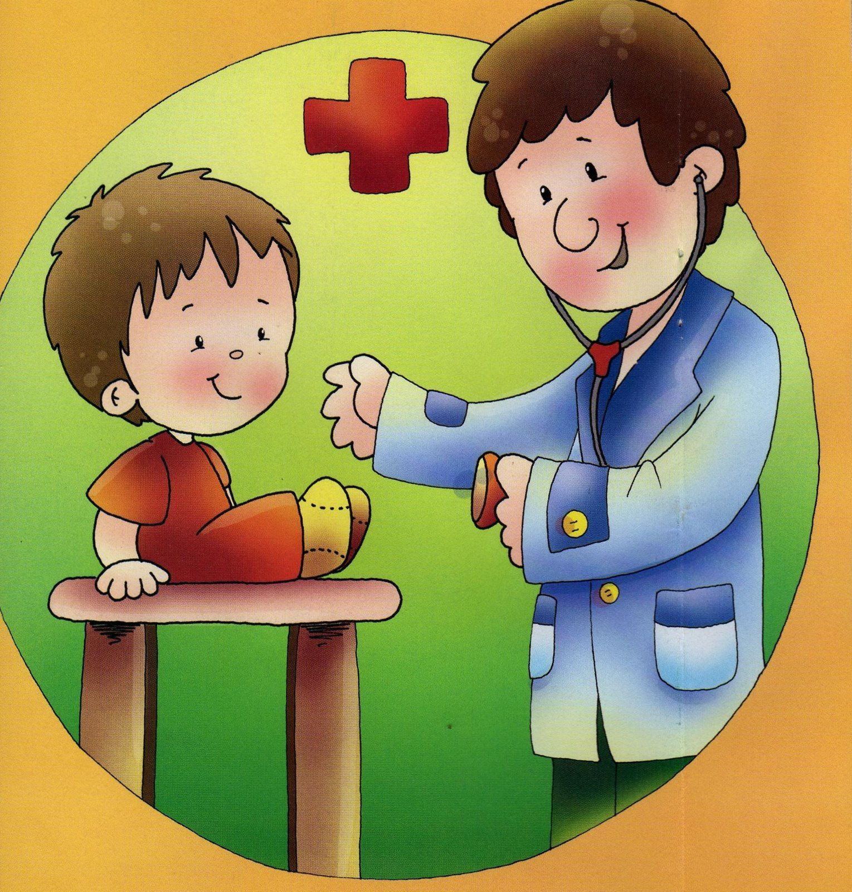

La salud de su hijo incluye el bienestar físico, mental y social. La mayoría de los padres conoce los aspectos básicos para mantener a los niños sanos tales como darles alimentos saludables, asegurarse de que duerman y se ejerciten lo suficiente y garantizar su seguridad.
También es importante que los niños tengan chequeos médicos regulares. Estas visitas son una oportunidad para revisar el desarrollo de su hijo.
Además de los chequeos, los niños en edad escolar deben ir al médico por: Pérdida o aumento importante de peso Problemas para dormir o cambios de conducta Fiebre de más de 102ºF (38.8ºC) Erupciones cutáneas o infecciones en la piel Dolores de garganta frecuentes Problemas respiratorios
